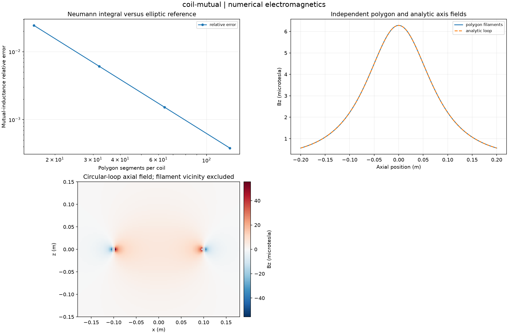

Reproducible numerical electromagnetics. Units and field components are printed on the scientific axes. Peak phasors use exp(+i omega t); outgoing waves use exp(-i k r).
Sealed numeric archive | Summary CSV | Physical parameters | Run request | Source and environment

| analytic_mutual_h | 8.284985572686606e-08 |
|---|---|
| coaxial_attractive_force_n | -1.4940518524666498e-06 |
| finest_mutual_h | 8.281821970258034e-08 |
| finest_relative_error | 0.0003818476689930739 |
These are simulations, not hardware measurements. Mesh, boundary, truncation and statistical uncertainty require distinct convergence checks. Singular or unilluminated data use explicit masks.
Source revision: 255b9ec965941d1fc97a04b9f7e2101e959fbeca.
Dirty checkout: False.
Configuration SHA-256: 3f64eadf6333a6197a38509a5649d053d470d55f236a790ed1b6959fc4b71479.
Replay preserves original source and parameter provenance. SHA-256 manifests detect changed bytes; they are unsigned integrity records, not certificates of physical validity.